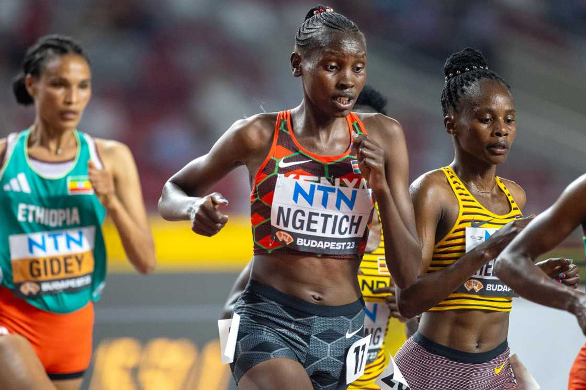
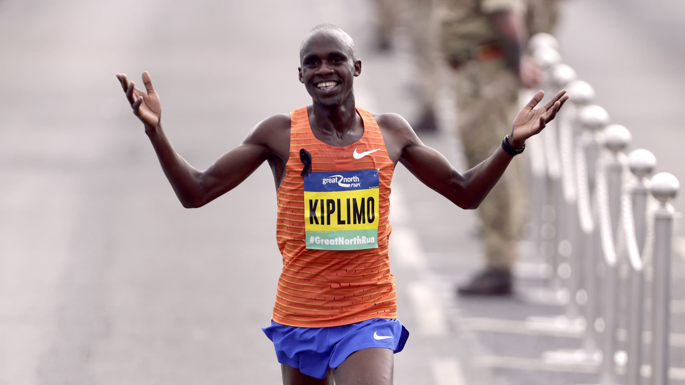
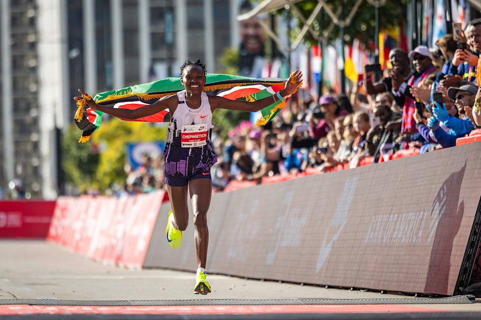

Dai 10 km alla maratona: i limiti umani in numeri
La velocità che non lascia spazio al pensiero
I 10 km sono la forma più pura di aggressività controllata nella corsa su strada. Non esiste margine per errori, non esiste fase di recupero: ogni metro è parte di un ritmo che deve restare perfetto dall’inizio alla fine.
È una distanza che non perdona. Parti troppo forte e crolli, parti troppo piano e sei fuori gara. Qui il corpo lavora al limite della sua capacità aerobica, mentre la mente deve restare completamente vuota e precisa, come un metronomo.
Il record di Rhonex Kipruto (26:24) e quello di Agnes Ngetich (28:46) rappresentano la corsa nella sua forma più estrema: un ritmo che sembra impossibile da sostenere per un essere umano, dove la velocità non è più un picco ma una condizione continua. È il punto in cui la corsa smette di sembrare fatica e diventa esecuzione pura.
26:24
Record maschile
28:46
Record femminile
L’equilibrio tra controllo e sopravvivenza
La mezza maratona è la distanza più ingannevole. Non è uno sprint lungo, ma non è ancora una maratona completa: è il territorio dove tutto può succedere.
Qui il vero nemico non è la velocità, ma la gestione. Ogni chilometro è una decisione strategica: quanto spingere, quando risparmiare, quando accettare il dolore senza farsi distruggere.
Jacob Kiplimo (56:42) e Letesenbet Gidey (1:02:52) hanno portato questa distanza in una dimensione quasi irreale. Non si tratta più solo di resistenza: è controllo assoluto del ritmo interno, capacità di restare costanti mentre il corpo inizia lentamente a chiedere di fermarsi.
La mezza maratona è questo: un dialogo continuo tra mente e fatica, dove vince chi riesce a non farsi mai sopraffare dal momento.

56:42
Record maschile1:02:52
Record femminile
Quando l’impossibile diventa reale
La maratona è il punto in cui il corpo si arrende… e la mente decide se fermarsi o continuare.
Per 42 chilometri si consuma tutto: energie, lucidità, controllo. Arriva un momento in cui correre non è più naturale, diventa una scelta. Ogni passo è una sfida contro il limite, ogni chilometro è una negoziazione con il dolore.
E poi arriva qualcosa che cambia tutto.
A Londra, Sabastian Sawe (1:59:30) ha fatto ciò che per anni è stato considerato impossibile: scendere sotto le 2 ore in una gara ufficiale. Non un esperimento controllato, non condizioni perfette costruite, ma una vera maratona. Un’impresa che ridefinisce il concetto stesso di limite umano.
Non è solo un tempo.
È la dimostrazione che anche il confine più solido può essere superato.
Accanto a lui, Ruth Chepng’etich (2:09:56) ha mostrato la stessa capacità: mantenere controllo e forza quando tutto spinge a rallentare, trasformando la fatica in continuità.
La maratona è questo: il momento in cui il corpo finisce… e resta solo la volontà.
1:59:30
Record maschile
2:09:56
Record femminile